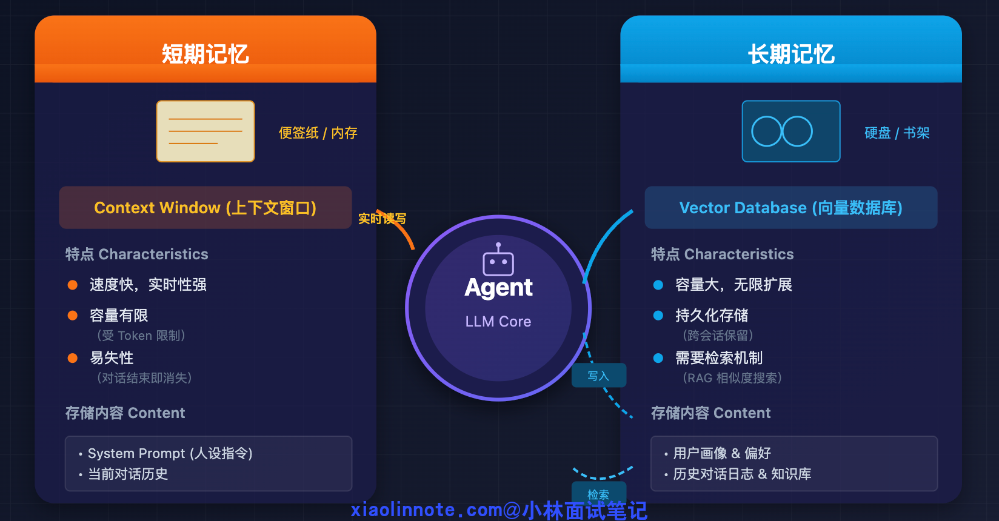
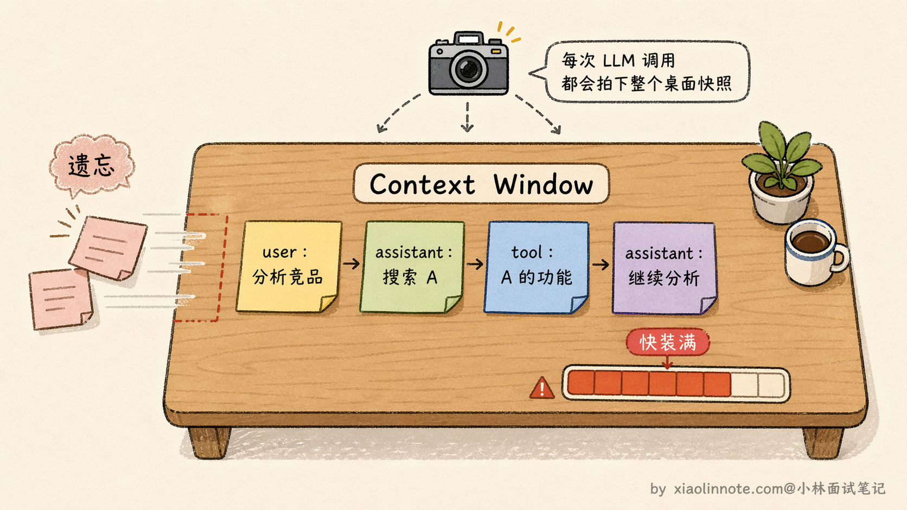
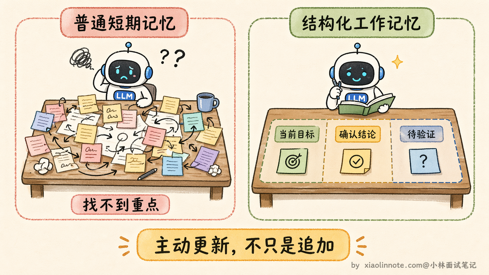
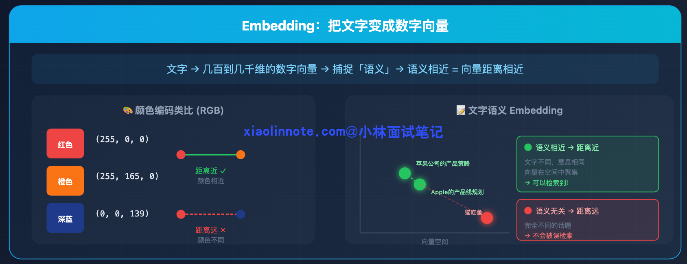
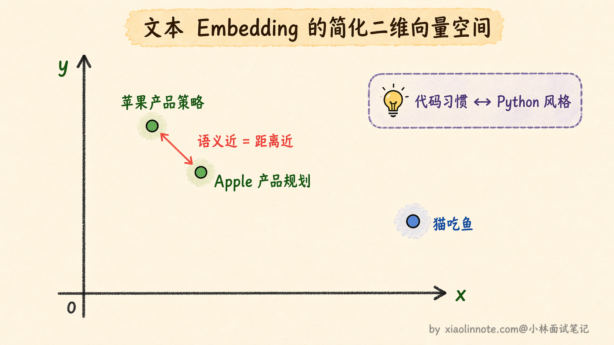
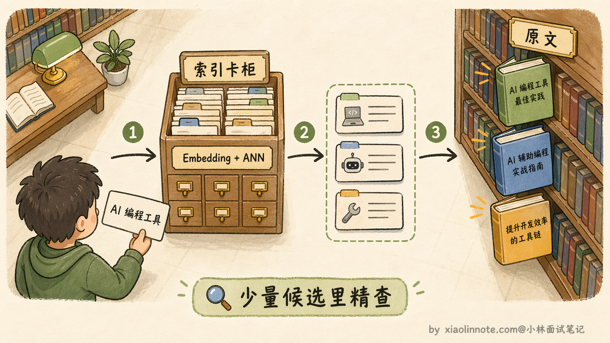
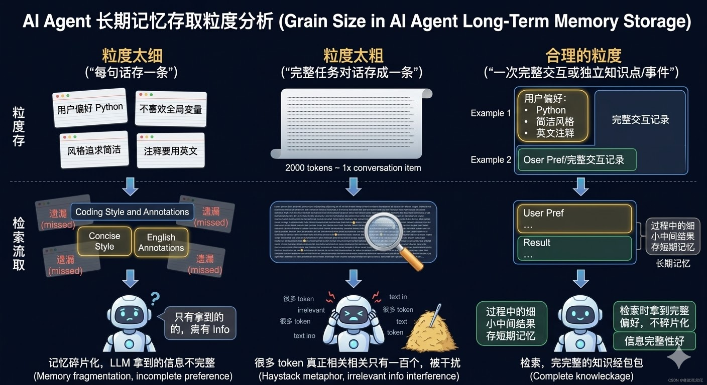
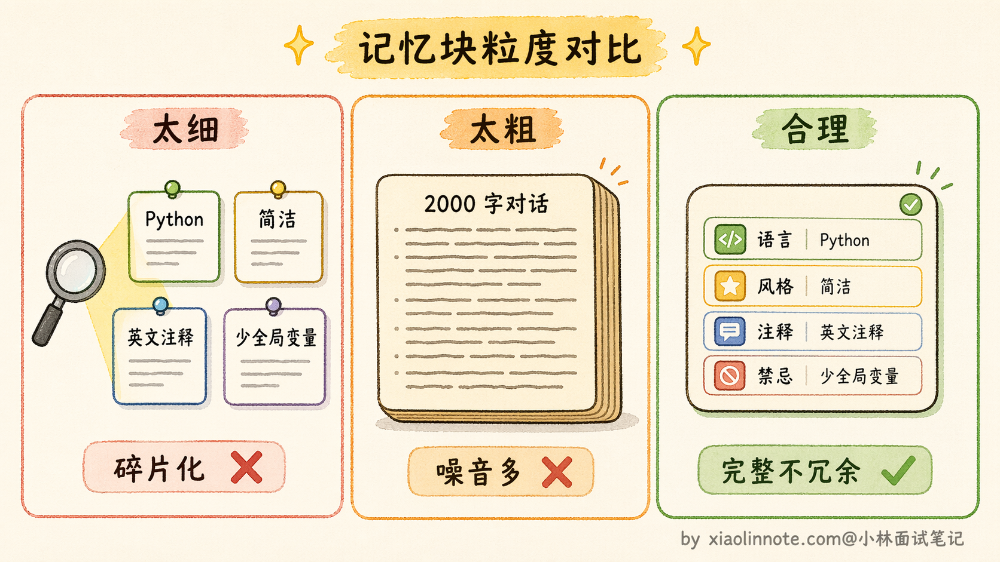
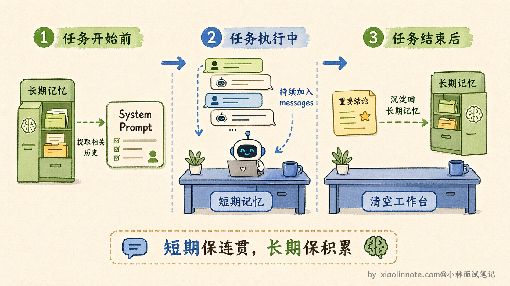

Agent 的长短期记忆系统怎么做的？记忆是怎么存的？粒度是多少？怎么用的？
👔面试官：你们项目里 Agent 的记忆系统是怎么做的，短期记忆和长期记忆分别存在哪？
🙋♂️我：短期记忆就是把对话历史存在内存里，长期记忆存数据库，需要的时候查出来用。
👔面试官：长期记忆「存数据库」？那你用的什么数据库，怎么查的，按关键词全文搜索吗？
🙋♂️我：也可以用关键词搜索，就是普通的字符串匹配，比如用 SQL 的 LIKE 查询……
👔面试官：你这样搜根本搜不到语义相关的内容。比如用户问的是「代码习惯」，历史里存的是「Python 风格偏好」，关键词不重叠，你怎么匹配？
🙋♂️我：那……我把粒度搞细一点，把每句话都拆开存，这样关键词覆盖更全。
👔面试官：拆得越细，检索噪音越大，一个完整的用户偏好被拆成四五条，检索时只命中其中两条，拿到的是碎片化信息，这才是问题所在。你知道长期记忆的正确存法是什么吗？
好，被追问到这里说明这道题的坑不少，咱来系统说一下 Agent 记忆系统的正确做法。
💡 简要回答
我理解记忆系统分两层。
短期记忆就是 context window 里的对话历史，存当前任务的中间状态，任务结束就清掉；长期记忆用向量数据库存，把信息 embedding 后写入，用的时候做语义检索拿回来注入 prompt。
粒度上我通常按「一次完整交互」或「一个关键事件」为单位存，太细碎检索噪音大，太粗糙又丢失细节，这个需要根据业务实际调整。
📝 详细解析
先假设一个没有记忆系统的 Agent，感受一下它会有多不堪用。
你今天找它说「帮我优化这段 Python 代码，风格要简洁一点，变量命名用英文」，它帮你优化好了。明天你又找它说「帮我写一个爬虫脚本」，它输出了一段用中文变量命名的代码，风格也很啰嗦。你很困惑，昨天不是刚说好了吗？对它来说，昨天的对话压根不存在。它不记得你的偏好，不记得你们达成过什么约定，每次对话都是全新的开始，就像每次见面都是第一次认识。
这个「失忆」问题，对单次问答来说不是大问题，但对一个要持续帮你工作的 Agent 来说，意味着它永远无法积累对你的了解，也无法在多次任务之间建立连贯性。
记忆系统就是为了解决这件事而存在的：让 Agent 既能在一次任务执行过程中保持状态，也能跨任务记住重要信息。实现上，记忆被拆分成两层，它们解决的问题不同，实现方式也完全不同。

短期记忆
先说短期记忆，它就是你每次调 LLM 时传进去的 messages 列表。你可以把它想象成 LLM 当前的「工作台」，桌面上摆着当前任务的所有相关内容：用户的指令、LLM 自己的思考过程、工具调用的结果、每一步的中间状态。LLM 靠这张桌面知道「我在做什么、做到哪了、前面几步发现了什么」。
实现上非常直接，就是维护一个列表，每一步产生的内容都追加进去：
class ShortTermMemory:
def __init__(self):
# messages 列表就是 LLM 的工作台
# 每条消息有 role（谁说的）和 content（说了什么）
self.messages = []
def add(self, role: str, content: str):
# role 有三种：user（用户输入）、assistant（LLM 输出）、tool（工具返回结果）
# 每一步的内容都要追加进来，保持完整的任务状态
self.messages.append({"role": role, "content": content})
def get_context(self):
# 调 LLM 时把完整的 messages 传进去
# LLM 会读取这份完整历史来理解当前状态
return self.messages
def clear(self):
# 任务结束后清空，准备迎接下一个任务
# 清空意味着这次任务的所有中间状态都消失了
self.messages = []
一次任务执行的示例
memory = ShortTermMemory()
memory.add("user", "帮我分析这几家竞品的核心功能差异")
memory.add("assistant", "好的，我先搜索一下竞品 A 的信息")
memory.add("tool", "搜索结果：竞品 A 的核心功能是实时协作编辑，支持最多 50 人同时在线……")
memory.add("assistant", "已拿到竞品 A 的信息，再搜竞品 B")
每次调 LLM 都传完整历史，它才能知道自己做到哪一步了
response = llm.chat(messages=memory.get_context())
这里有一个重要的点：每次调 LLM 时传的是完整的历史，而不只是最新一条消息。这就是短期记忆的本质，把整个任务状态带在身上。代价是 messages 会随着任务进展越来越长，context window 总有一天会装满，早期的内容就开始被截断，Agent 就开始「遗忘」。

短期记忆在当前任务结束后就清空了，下次来了新任务，桌面是空的，什么都不记得了。要让 Agent 跨任务记住东西，就需要长期记忆。
不过在聊长期记忆之前，有一个进阶概念值得了解：结构化工作记忆（Structured Working Memory）。前面说的短期记忆是纯粹的消息列表，什么都往里塞，比较粗放。
结构化工作记忆的思路是，给这个「工作台」划出几个固定区域，比如一个区域专门放「当前任务目标」，一个区域放「已确认的中间结论」，一个区域放「待验证的假设」。每一步执行完之后，Agent 不只是把新消息追加到列表末尾，而是主动更新对应区域的内容，把过时的中间结论替换掉，把已验证的假设移到确认区。
这样做的好处是，即使对话很长，Agent 的工作台始终是结构清晰的，不会被一堆杂乱的历史消息淹没，LLM 每次读到的都是当前最准确的任务状态。

长期记忆
长期记忆的核心工具是向量数据库（Vector Database）加上 Embedding（向量化），对初学者来说这两个词可能很陌生，先解释清楚。
Embedding 是把一段文字转化成一组数字的过程。这组数字通常有几百到几千个维度，它们共同捕捉了这段文字的「语义」。语义相近的文字，转化出来的数字向量在空间里也靠得很近。
举个类比：你把颜色编码成 RGB，红色是 (255, 0, 0)，橙色是 (255, 165, 0)，它们的数字距离很近，因为颜色本身就相近。深蓝色是 (0, 0, 139)，和红色的数字距离很远，颜色也相差很远。这个类比帮你建立「相似=距离近」的直觉就够了，实际的文本 Embedding 是几百到几千维的空间，比 RGB 三维复杂得多，高维里「距离」通常用余弦相似度而不是简单的欧氏距离来算。

Embedding 对文字做的事是一样的：「苹果公司的产品策略」和「Apple 的产品线规划」，文字不同但语义相近，embedding 出来的向量在空间里距离就很近；「苹果公司」和「猫吃鱼」，语义毫不相关，向量距离就很远。

向量数据库，就是专门存这些数字向量的数据库。它最核心的能力是「相似度检索」：给你一个查询向量，找出数据库里和它距离最近的几条记录，也就是语义最相关的内容。
你可以用图书馆的索引卡来类比：找书时你不需要逐本翻阅内容，而是先查索引卡快速定位可能相关的书，再去书架上取原文。向量数据库里的 embedding 就是这些「语义索引卡」，再加上 HNSW / IVF 这类近似最近邻（ANN）索引结构做加速，不用拿你的查询向量去和库里每一条都比一遍，只用在少量候选里精查，检索效率极高。

把两者结合：存的时候，把信息转成向量和原文一起存进去；取的时候，把当前的问题也转成向量，找数据库里语义最相关的记忆拿出来。
再多说一层：长期记忆其实还可以按「类型」细分成三种。
第一种是语义记忆（Semantic Memory），存的是事实性知识，比如「用户是 Python 开发者」「项目预算上限 5 万」，这些是不随时间变化的客观信息。
第二种是情节记忆（Episodic Memory），存的是具体事件的经历，比如「上周二用户让我写了一个爬虫，中间因为反爬策略改了三次方案」，它带有时间线和因果关系。
第三种是程序记忆（Procedural Memory），存的是「怎么做某件事」的方法论，比如「给这个用户写代码时，先确认风格偏好，再写主逻辑，最后加注释」，它更像是 Agent 积累下来的行为模式。
把记忆按类型区分存储的好处是，检索时可以根据当前需求精准地去对应类型的库里查，语义记忆库回答「是什么」，情节记忆库回答「之前怎么处理过类似情况」，程序记忆库回答「该按什么流程来」，比一锅端地在混合库里搜，召回质量要高不少。
from openai import OpenAI
import chromadb
client = OpenAI()
ChromaDB 是一个轻量的向量数据库，适合本地开发使用
db = chromadb.Client()
创建一个「集合」，类似于关系数据库里的表，用来存 Agent 的长期记忆
collection = db.get_or_create_collection("agent_memory")
def save_to_long_term(content: str, metadata: dict):
# 第一步：把文字内容转成 embedding 向量
# text-embedding-3-small 是 OpenAI 的 embedding 模型，把文字变成数字向量
embedding = client.embeddings.create(
input=content,
model="text-embedding-3-small"
).data[0].embedding # 得到一个几百维的浮点数列表
# 第二步：把向量、原文、元信息一起存进向量数据库
# 第二步：把向量、原文、元信息一起存进向量数据库
# metadata 非常关键，它是记忆的「标签」，后续检索时可以按标签过滤
# 比如只查「coding 类型」的记忆，或者只查「最近 7 天」的记忆
collection.add(
embeddings=[embedding], # 这是「索引」，用于相似度检索
documents=[content], # 这是原文，检索命中后返回给 LLM 直接使用
metadatas=[metadata], # 附加信息，比如存入时间、任务类型、重要程度、记忆类型
ids=[f"mem_{hash(content)}"]
)
def retrieve_memory(query: str, top_k: int = 3) -> list[str]:
# 第一步：把当前查询也转成 embedding 向量
# 和存储时用的是同一个 embedding 模型，这样「语义距离」才有可比性
query_embedding = client.embeddings.create(
input=query,
model="text-embedding-3-small"
).data[0].embedding
# 第二步：在向量数据库里找「向量距离最近」的几条记录
# 向量距离近 = 语义相近 = 内容最相关
results = collection.query(
query_embeddings=[query_embedding],
n_results=top_k # 只取前 top_k 条，避免检索出太多噪音
)
# 返回的是原文文本列表，LLM 可以直接读取这些记忆内容
return results["documents"][0]
存的时候，把内容转成向量和原文一起存；取的时候，把当前问题也转成向量，找向量空间里最近的几条记忆。「语义相似 = 向量距离近」这个特性，让你不需要精确匹配关键词，靠意思相近就能把相关记忆检索出来。
这里还有一个容易忽略的问题：记忆衰减。人的记忆会随着时间淡化，Agent 的长期记忆其实也应该有类似的机制。
想象一下，用户半年前说「我最近在学 Go」，但最近三个月的所有对话都是关于 Python 的，如果 Agent 不做衰减，下次检索到那条旧记忆还按「用户在学 Go」来处理，就会很违和。
常见的做法是给每条记忆加一个「新鲜度权重」，检索排序时同时考虑语义相似度和时间新鲜度，越久远的记忆权重越低。另一种做法是定期让 LLM 审查长期记忆库，把过时的、矛盾的记忆标记为失效或者合并更新，保持记忆库的「健康状态」。
存长期记忆时，「一次存多少内容」这个粒度问题非常关键，直接影响后续检索的质量。

- 粒度太细，每句话存一条，会产生什么问题？假设你把「用户偏好 Python，不喜欢全局变量，风格追求简洁，注释要用英文」拆成四条记忆，下次检索时可能只命中了其中某几条，其他的被遗漏了，记忆碎片化，LLM 拿到的是不完整的偏好信息。
- 粒度太粗，把一整次任务的完整记录存成一条，又会有什么问题？假设一次完整对话有两千个 token 存成一条，检索时命中了，但这两千个 token 里真正和当前问题相关的可能只有一百个，LLM 要在一堆无关内容里找到真正有用的信息，很容易被干扰。
比较合理的粒度是按「一次完整交互」或「一个独立的知识点/事件」来存。前者是用户的一个具体请求加上 Agent 处理结果，信息完整性好；后者是把「用户偏好：Python，简洁风格，英文注释」打包成一条结构化记录，检索时一次拿到完整偏好，不会碎片化。过程中的每一步细小中间结果通常不需要存长期记忆，短期记忆够用。

把两层记忆放在一个具体场景里来感受它们是怎么配合的。
用户第一次来，说「帮我优化这段 Python 代码」。执行过程中，短期记忆维持整个对话状态，存着用户发的代码、LLM 的分析过程、优化后的结果。任务结束后，把「该用户偏好 Python，代码风格简洁，变量命名用英文」这条信息存进长期记忆。
两天后用户回来说「帮我写一个网页爬虫」。Agent 在开始任务之前，先用「网页爬虫」检索长期记忆，拿回来的相关记忆里包含了那条偏好信息。Agent 把这条信息注入 system prompt，然后开始任务，写出来的爬虫脚本自然就符合用户偏好了，用户会感觉「这个 AI 真了解我」，实际上是长期记忆在背后起了作用。
def run_agent_with_memory(user_request: str, long_term_memory, short_term_memory):
# 第一步：任务开始前，用任务描述检索长期记忆，拿出相关历史
# 这一步让 Agent「想起」和当前任务相关的历史经验和用户偏好
relevant_memories = long_term_memory.retrieve(user_request, top_k=3)
# 第二步：把检索到的长期记忆注入 system prompt
# LLM 会把这些信息当作背景知识，影响它这次任务的处理方式
system_prompt = f"""你是一个智能助手。
以下是用户的相关历史信息，请在处理任务时参考：
{chr(10).join(relevant_memories)}"""
short_term_memory.add("system", system_prompt)
short_term_memory.add("user", user_request)
# 第三步：整个任务执行过程中，靠短期记忆维持状态
# 每一步的中间结果都追加进 messages，LLM 始终知道做到哪里了
result = execute_task_with_short_term_memory(short_term_memory)
# 第四步：任务完成后，把重要结论写入长期记忆
# 这次任务产生的新知识就沉淀下来，下次可以用
if result.is_important:
long_term_memory.save(
content=result.summary,
metadata={"task_type": "coding", "timestamp": now()}
)
return result
短期记忆在任务执行的整个过程中起作用，是那个时刻在变化的「工作台」；长期记忆在任务开始前和任务结束后起作用，是沉淀下来的「档案」。前者保证当前任务的连贯性，后者保证跨任务的积累。两层配合，才让 Agent 既不会在一次复杂任务中途失忆，也能随着使用时间的增长，变得越来越「了解」用户。

🎯 面试总结
这道题最容易踩的雷有三个，对照开头的对话回想一下。
第一个雷是把长期记忆说成「存数据库靠关键词搜索」，这暴露了不了解向量检索，长期记忆的核心是 Embedding + 向量数据库，靠语义相似度而不是字符串匹配来检索，这一点一定要说清楚。
第二个雷是以为粒度越细越好，实际上粒度太细会导致记忆碎片化，检索时拿到不完整的信息，合理粒度是「一次完整交互」或「一个独立知识点」。
第三个雷是搞不清两层记忆各自的作用时机，短期记忆是任务执行中的「工作台」，任务结束就清空；长期记忆是任务前检索注入、任务后写入沉淀，两者分工不同，配合使用才能让 Agent 既不中途失忆、又能跨任务积累。